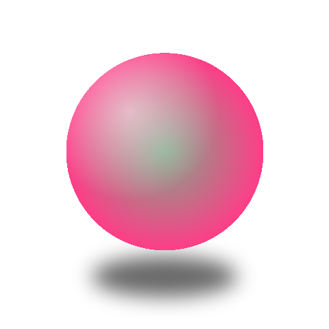
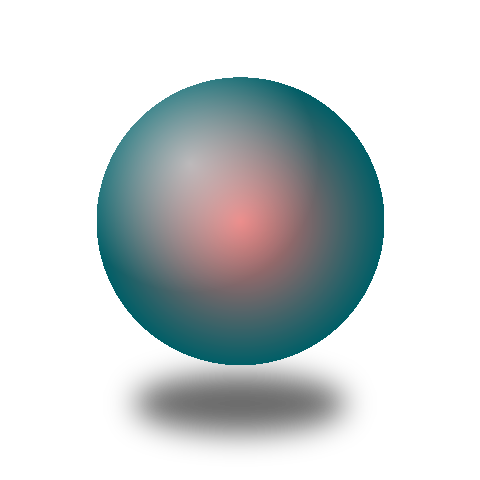
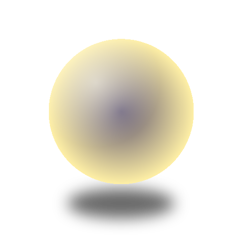

UniverseView —
サークル別プレイリスト
home · cluster reel redesign
下端の
1 本横リール
（main クラスタの全
allPins
）を、各投稿が持つ
circleId
でグループ化した
「サークル別プレイリスト」
へ再設計。
サークルごとに 1 行
（左に circle サムネ丸＋名前、右にその投稿を横スクロール）を
縦に積み
、下端 scrim 内に 2〜3 行が見える。cell の見た目は
現状維持
（9:16・外枠 14／内画像 12・
代表＝白 2.5px
）。地図には obj の
3D
が棒/リング/三角ナシで直接乗り、
main をタップ
で 3D フォーカスへ。
NAGASAKI 1-CHOME
長崎一丁目
NISHI-IKEBUKURO
西池袋
NAKAOCHIAI
中落合三丁目
SHIMO-OCHIAI
下落合
MEJIRO 2
目白二丁目
TAKADANOBABA
高田馬場
KITA-SHINJUKU
北新宿
HYAKUNINCHŌ
百人町
ŌKUBO 1
大久保一丁目
SHINJUKU 7
新宿七丁目
Shinjuku
新宿区
NISHI-SHINJUKU
西新宿
Kōshū Kaidō 甲州街道
YOYOGI 3
代々木三丁目
YOYOGI 2
代々木二丁目
YOYOGI 1
代々木一丁目
YOYOGI-KAMIZONOCHŌ
代々木神園町
SENDAGAYA
千駄ヶ谷
JINGŪMAE 1
神宮前一丁目
Meiji Street 明治通り



23:57
デバッグ太郎
0
0
渋谷コミュニティ
3
神宮前コミュニティ
3
代々木サークル
2
新宿グループ
2
ドラッグで 360°
redesign · 下端リール → プレイリスト
新
サークル別プレイリスト
circleId グループ化
allPins
を投稿の
circleId
でまとめ、
サークル 1 行
を
縦スクロール
。各行＝左に circle 丸サムネ
30px
＋名前（
--text-2 · 12.5px
1行省略）／右に投稿を
横スクロール
。下端 scrim に
2〜3 行
。
cell
投稿セル
現状維持
100×178 (9:16)
、外枠 r14・内画像 clip12。
代表＝白 2.5px
/ 他＝
α.2 1px
。中身は
画像＋枠だけ
。タップで代表昇格＝中心 main 3D を差し替え。
TAP
セルをタップ → 代表（白枠）が移動＋main 3D 差し替え
L1
3D オブジェクト
obj-NN
地表に
棒/リング/三角ナシで直接
乗る。
role でサイズ激変
（main 巨大／sub 小）。実機は写真由来の人物 GLB。
TAP
中央の main 3D → 3D フォーカスへ（背景=サークル画像）
L2
chrome
維持
top scrim
h158
/ バッジ＝丸40＋名前のみ / menu+message
44px
/ サイドツール / 投稿
camera 55×55
。プレイリスト用に
保護グラデを増設
（名前の AA 担保）。


 渋谷コミュニティ
3
渋谷コミュニティ
3


 神宮前コミュニティ
3
神宮前コミュニティ
3


 代々木サークル
2
代々木サークル
2


 新宿グループ
2
新宿グループ
2